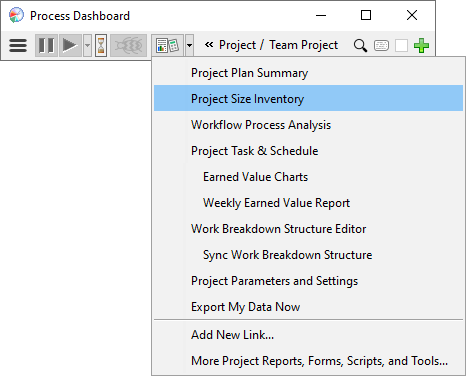

The Process Dashboard performs many calculations that help you track your progress and monitor the quality of the products you and your team produce. To calculate these metrics, the dashboard needs you to collect and enter some additional data.
As you create documents, designs, and code, you should keep track
of the defects you discover and remove from the software. To enter a
defect, switch to the Process Dashboard window, use the Hierarchy
Menus to navigate to the component containing the defect, and click
the Defect
button ( ). A defect dialog
will appear, allowing you to describe the defect. A timer in the
defect dialog makes it possible to track the amount of time it takes
to fix the defect.
). A defect dialog
will appear, allowing you to describe the defect. A timer in the
defect dialog makes it possible to track the amount of time it takes
to fix the defect.
Reviews: If you find defects while personally reviewing a product that you created, enter the defect normally using the defect dialog, as described above.
Inspections/Peer Reviews: During the course of your project, you will often review products created by other team members. In these situations, it is very common for several people to find the same defect. If you were to enter these defects using the method described above, the dashboard would not be able to recognize the duplicated defects, and the defect would get counted twice. Because of this, defects found during inspections should be handled differently:
Your team should have a defined process for performing an inspection, which you should follow even if it differs from the steps described above. The person responsible for fixing the defects found should also enter the defect data into the dashboard.
Size metrics are extremely valuable in the analysis of historical data and the creation of future plans. Accordingly, it is important to capture size data on various artifacts as you complete them.
The first step is to measure the size. For software, the dashboard's LOC counter can help with this task.
If your personal plan contains high-maturity planning or PSP tasks, you can enter the actual size on the task's Plan Summary Form and/or Size Estimating Template.
For other components and tasks, you can enter size data by opening the WBS Editor and entering values on the Actual Size tab.
You can enter values in more than one size column for a given item. For example, the image above shows an actual size of 3 SDD pages, 12 Test Cases, and 234 lines of code for component C1. You can also enter actual sizes on parent components and their children. The image above shows 3 SDD pages for component C1, 2 for component C2, and an additional SDD page for the parent Component C (for a total of 6 pages overall).
It best to capture and enter size data as you work. But if you forgot to enter the size of some component, you can go back and enter it later (and even if the project is finished). If needed, you can also enter size data for components written by other team members.
On older projects (created with Process Dashboard 2.5 and earlier), the WBS Editor will not allow you to edit the values on the Actual Size tab. For those projects, you'll need to enter actual size data on the Project Size Inventory Form. You can open this form by selecting a task within the project, clicking the script button, and choosing "Project Size Inventory" from the menu:

The Size Inventory form will be displayed in your Web browser.

Some entries may already appear in your size inventory; when you synchronized your work breakdown structure, this information was copied from the team plan. If you find an existing entry for a document you have created, you can enter a description of the document, along with the actual finished size of the document. If the size changes due to edits in the future, you can return to this form and alter the actual size value.
You can also create new entries in this size inventory form using the hyperlinks that appear at the bottom of the page. Make certain to enter a description, choose the appropriate size units, and enter planned and actual sizes for each new entry.
You will note that the Size Units field includes options for LOC and various types of documents. If you create a document, you should pick the size metric that best describes that document. In the Actual field, enter the number of pages that you personally wrote. If several people wrote sections of a particular document, each person should make an entry in their Size Inventory form describing the sections that they wrote and the sizes of those sections. (You can use the Description field to describe the specific section of the document that you wrote.) Only enter a value in the Actual field describing portions of the document that you produced - do not enter values describing document pages written by other team members.
Project planning summary reports are available for all of the work you do on your project. You can open these plan summaries by clicking the dashboard Script button.
PSP tasks in your project hierarchy will provide familiar project plan summary forms, as defined by the PSP process.
In addition, a plan summary form is provided that displays your consolidated personal data for the entire project.

This form contains an initial set of charts and reports that you
may find useful. However, you can customize this report to add other
charts, reports, and metrics: just click the ( ) icon near the top of the page. In
addition, you can drill down into a different part of your project
hierarchy by clicking on the (
) icon near the top of the page. In
addition, you can drill down into a different part of your project
hierarchy by clicking on the ( )
icon.
)
icon.